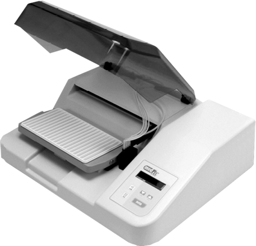

Autoblot 3000

DESCRIPCIÓN: AUTOBLOT 3000 es un equipo completamente automatizado para los ensayos de diagnóstico in vitro de Western Blot. El Autoblot incuba, agita, lava y lleva a cabo la adición subsecuente de reactivos definida por el operador durante la fase de programación para el procesamiento de muestras. Ello permite una fácil instalación con el procesador WALKAWAY, sonando una alarma cuando la prueba es completada.
El Autoblot dispensa y aspira hasta 20 tiras en 90 segundos. El modelo 3000 dispensa hasta seis reactivos dependiendo del número de bombas utilizadas.
CARACTERÍSTICAS:
- Sistema compacto: Equipo diseñado para operarse fácilmente sobre una superficie pequeña.
- Seguro y confiable: Diseñado pensando en la seguridad del usuario.
- Alto rendimiento: Procesa hasta 20 tiras en forma simultánea utilizando nuestro único sistema de líquido.
- Fácil de programar: Programación simple e intuitiva. Se pueden agregar nuevos ensayos de manera fácil; el programa editado permite construir la unidad para procesar ensayos específicos.
- Resultados seguros y confiables: Diseñado especialmente con un sistema único de dispensación y aspirado, lo cual produce resultados seguros y altamente reproducibles. Puesto que el equipo controla los tiempos de incubación, el volumen dispensado y realiza un lavado estricto se obtienen corridas fiables, y los resultados se pueden interpretar en 3 horas aproximadamente.
- Parámetros programables: Procesa hasta 20 pruebas simultáneas, dispensa líquido de lavado, tiempos de incubación y agitación.
DATOS COMPLEMENTARIOS: Para mayores informes comunicarse a:
ACCUTRACK, S.A. DE C.V.
Teléfonos: (55) 5524-4481, 5524-2644, 5524-4575
e-mail: ventas@accutrack.com.mx
www.accutrack.com.mx